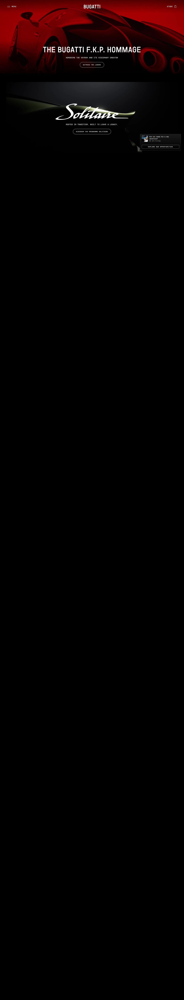

Bugatti 主题
Bugatti 的 Design.md 主题展示，围绕SaaS 产品、开发工具、浅色界面组织页面。
Hypercar brand. Cinema-black canvas, monochrome austerity, monumental display type.
SaaS 产品开发工具浅色界面

来源
- 来源
- getdesign.md
- 镜像
- github:VoltAgent/awesome-design-md
- 网站
- https://bugatti.com/
- 详情
- https://getdesign.md/bugatti/design-md
色板
#000000: #000000#0d0d0d: #0d0d0d#ffffff: #ffffff#c3d9f3: #c3d9f3#cccccc: #cccccc#e6e6e6: #e6e6e6#999999: #999999#666666: #666666#262626: #262626#3a3a3a: #3a3a3a#141414: #141414#1f1f1f: #1f1f1f
字体
display: Bugatti Displaybody: Bugatti Text Regularmono: Bugatti Monospacehints: Bugatti Display,Bugatti Text Regular,Bugatti Monospace,ui-monospace,Inter,Roboto
圆角
control: 0pxcard: 0pxpreview: 0pxpill: 9999pxsource: design-md
间距
xxs: 4pxxs: 8pxsm: 12pxmd: 16pxlg: 24pxxl: 40pxxxl: 64pxsection: 120pxsource: design-md
使用建议
建议
- 建议：Anchor every page with full-bleed automotive photography. The cars are the brand voltage; chrome backs off entirely。
- 建议：Keep all display headlines in UPPERCASE Bugatti Display with 2-4px letter-spacing. The wordmark gets 6px。
- 建议：Use Bugatti Display for headlines, Bugatti Text Regular (serif!) for body, Bugatti Monospace for buttons + captions + nav. The trinity is unbreakable。
- 建议：Keep {component.button-primary} transparent with a 1px white outline. The transparent pill IS the brand button。
- 建议：Use weight 400 everywhere. Bold breaks the brand voice — the system has no bold weight role。
避免
- 避免：introduce any accent color outside {colors.link}. Bugatti's brand discipline is total monochrome + photography. Adding a brand-blue or brand-red breaks the contract。
- 避免：bold any type. The system has no bold weight — every typeface stays at 400。
- 避免：fill primary buttons. Transparent + outline only. A solid white button reads as off-brand。
- 避免：compress whitespace between sections. The 120px rhythm is part of the editorial pacing。
- 避免：use rounded corners outside buttons. Cards, photos, inputs all stay at 0px. Rounded cards read as consumer-tech, not luxury-engineered。
查看 DESIGN.md